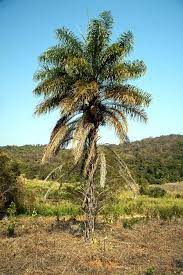
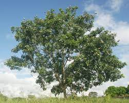
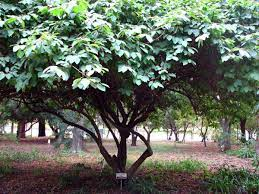

¿Qué es el bosque?
En esta pestaña encontrarás todos los árboles que
están disponibles y los mas emblemáticos del estado de Chiapas.
Así mismo te daremos una breve información acerca de cada uno de ellos.
Árboles

Cedro rojo (Cedrela odorata)
Descripción. Árbol caducifolio, de 20 a 35 m (hasta
45 m) de altura, con un diámetro a la altura del pecho
de hasta 1.7 m. Copa grande, redondeada, robusta y
extendida o copa achatada.
Árboles similares. Por características de la corteza, puede confundirse con el jobo (Spondias
mombin).
Nombres comunes de especies similares. Jobo
Dist. & Hábitat. Desde el norte de México hasta el
norte de Argentina, incluidas las islas del Caribe. Se
le encuentra en laderas y planicies costeras, en
suelos de origen volcánico o calizo siempre que
tengan buen drenaje y porosidad. Desde el nivel del
mar hasta 800 msnm, con temperaturas entre 20 y
32 ˚C, y con una precipitación entre 1200 y 2000 mm
por año, con una estación seca de tres a cuatro
meses.
Relaciones interespec. Desarrolla nódulos fijadores de Nitrógeno en las raíces. Simbionte: Frankia
(Frankia alni). También fija nitrógeno del aire a razón
de 279kg/ha.

Encinos (Quercus spp.)
El encino Quercus xalapensis, es una de las aproximada
600 especies del género Quercus dentro de la familia
Fagaceae, es un árbol que crece hasta los 25 metros
(máximo 30 m) de altura y el tronco hasta 1.50 metros
de diámetro. La corteza es áspera, gris, oscura y gruesa.
Las hojas miden de 10 a 15 cm de largo por 2-7 cm
de ancho con el margen aserrado, con una prolongación
en cada diente de un pelillo fino de hasta 8 mm de largo.
El mismo árbol produce flores femeninas y masculinas que
se presentan en febrero y marzo.

Palma de Coyol (Acrocomia aculeata)
El coyol es originario de Brasil, donde se lo conoce como la palmera más común. Sin embargo, se puede encontrar en otros países de América Latina. Mide entre 5 y 15 metros de altura, tiene espinas en su tronco y hojas y soporta bien las sequías.

Tepesuchil (Terminalia amazonia)
Es un árbol de la familia de las combretáceas.
Es nativo de América del Norte y América del
Sur.
Llega a tener una altura de hasta 70
m con hojas de color verde oscuro. En México
su distribución va del sur de Veracruz a Chiapas.
Su hábitat son los bosques tropicales perennifolios.
Se ha utilizado para explotación forestal comercial.
La madera es dura y duradera.

Caoba (Swietenia macrophylla)
La caoba es un árbol que
puede alcanzar de 20 a 40
metros de altura y de 20 a 150
centímetros de grosor o
diámetro.
Sus hojas son
paripinnadas y sus flores son
pequeñas con 5 pétalos de
color blanco amarillento.

Chirimoya (Annona cherimola)
El árbol de la chirimoya es de crecimiento lento, puede
adquirir en su madurez una altura de 7 a 8 m, presenta
exuberante follaje, porte erguido y a veces ramificado.
El tallo es cilíndrico y de corteza gruesa.
Las hojas, con peciolos de 6-12 mm, son simples,
enteras, muy finas, de disposición alterna y de
forma ovalada u ovada-lanceolada y con el envés tomentoso.